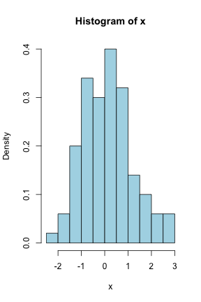

knitr
R markdown
Usign knitr via Rmd
Rnw knitr style
Introduction to knitr
Focus on the R Markdown (Rmd) format
L. Collado Torres
http://www.biostat.jhsph.edu/~lcollado
Overview
knitr
It's a framework for producing reproducible reports
- Code and text
- Runs R code and includes the output
How is it better than Sweave()?
- Prettier out of the box
- Code re-formating: tidy
- Code highlighting
- Simple copy-paste
- Better approach to dealing with plots
- Under active development by @xieyihui
The main difference: Markdown
Mark-down (md) advantages
- It's simple: little overhead
- Main result is
HTMLwhich opens new worlds besidesPDF
knitr main outputs
PDF: still throughRnwfilesHTML: via R Markdown files (Rmd)- Reports
- Tutorials: ggplot2 intro
- Presentations:
- RPubs example
- My first Rmd presentation
More at the knitr showcase
Active development around knitr
slidify
- How this presentation was made and published on the web.
knitcitations
- Useful for creating
HTMLcitations: example
RStudio
- Everything works out of the box
- You can use
knitrinstead ofSweave()(change the option) - Easily publish your reports via RPubs
Blogging
R Markdown
Markdowns syntax is simple
The only major change in Rmd are the R code chunks
RStudio (desktop) has a great syntax description. They have another great page online. Check it out!
Rmd basics
Your first Rmd file
- In RStudio: File, New, R Markdown
- Click on
Knit HTML
Your 2nd file
- In RStudio: File, New, R Markdown
- Click on
MD(Markdown quick reference) - Edit the title, text, code
- Click on
Knit HTML
Rmd R chunks
Basic chunk
```r
hola()
```
You can add chunk labels after r
Options
http://yihui.name/knitr/options
- Figure
fig.width,fig.height: R controlout.width,out.height: output controlfig.keep: useful for >=2 plots in 1 chunkfig.cap: caption in Rnw only
- Cache
cache: whether to cache a chunkdependson: which other chunks this chunk depends on
Options continued
- Results
results: similar to the same option inSweave()message,error,warning: whether to print them or not
- Global options
opts_chunk$set(fig.width = 5, fig.height = 5, cache = TRUE)
fig.height example
set.seed(20130404)
x <- rnorm(100)
hist(x, col = "light blue", freq = FALSE)
set.seed(20130404)
x <- rnorm(100)
hist(x, col = "light blue", freq = FALSE)

R code
plot(1:10)

library(slidify)
author("Rmd-intro")